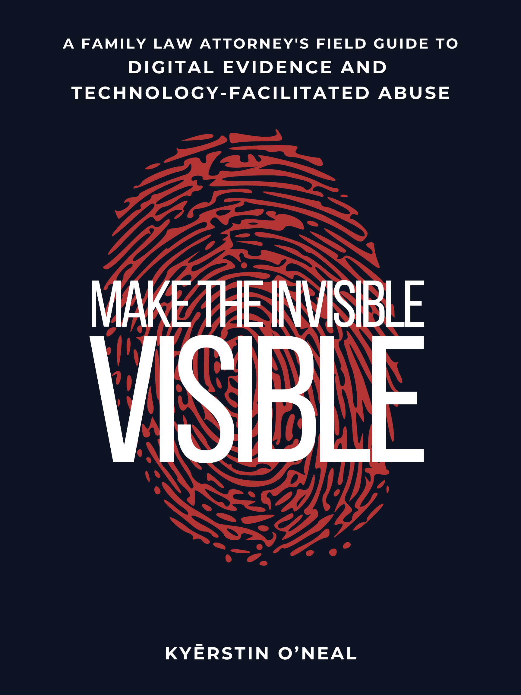

New Release — Available Now
A Family Law Attorney’s Field Guide to Digital Evidence and Technology-Facilitated Abuse
Your client isn’t paranoid. She’s being surveilled. The strange device behavior. The impossible knowledge. The ex who always seems to know exactly where she is and what she’s planning. These are not anxiety symptoms. They are textbook indicators of technology-facilitated abuse — and if no one in the room knows how to recognize them, the evidence disappears before you ever get to court. Make the Invisible Visible is the field guide family law attorneys have needed for years. Written by a CISA- and Sandia-trained cyberstalking and digital forensics investigator now exclusively focused on family law, this book gives you the framework to identify, preserve, authenticate, and present digital evidence at the level courts actually require. Not screenshots in a folder. Evidence that survives an authentication challenge, holds up under opposing counsel’s scrutiny, and reflects what is actually happening to your client.
“Her professionalism and her precision gave me something I had almost stopped believing I could have: a path forward.”— Tina Swithin, Founder, One Mom’s Battle
Need attorney-ready tools to go with the book?
VIEW THE ATTORNEY TOOLKIT →